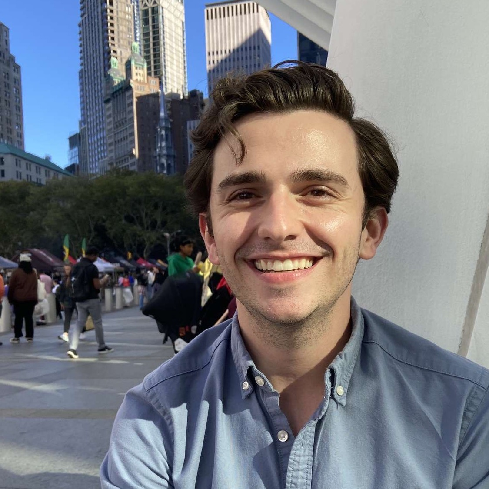

Welcome! I am an incoming Ph.D. Student in the Department of Government
at The University of Texas at Austin. With subfields in American Politics & Public Policy, I study the policy agenda-setting of local political institutions. I am particularly interested in partisan
polarization's influence on local school boards and city councils.
I'm a first-generation college student and proud product of public education at the pre-K-12, undergraduate, and graduate level. Before my move to Austin, TX,
I received a B.S. in Political Science & International Relations (with honors and Phi Beta Kappa) from Truman State University in Kirksville, MO.